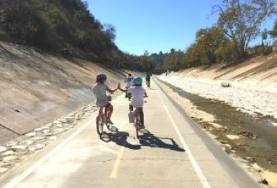
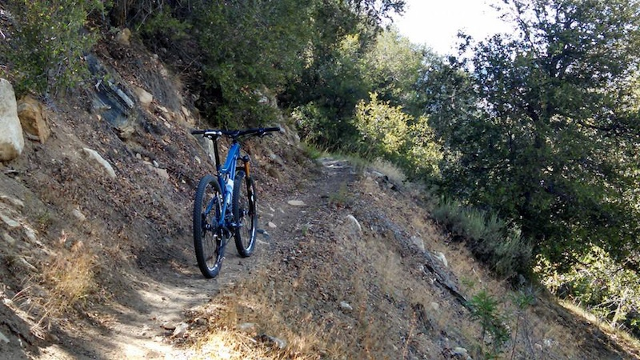
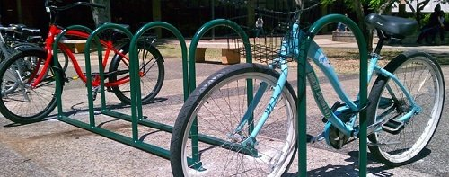
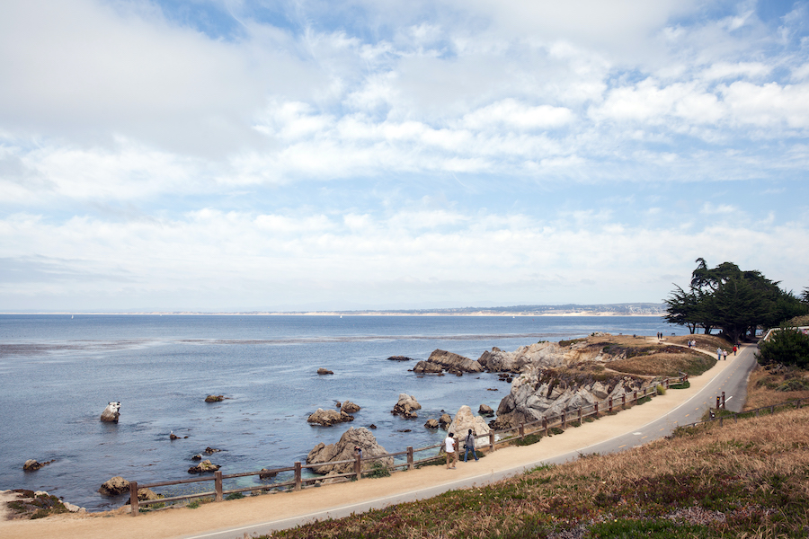
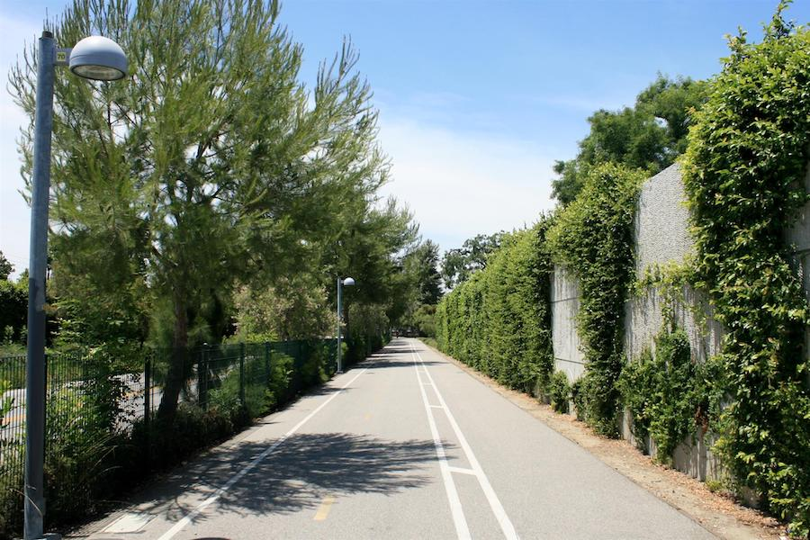
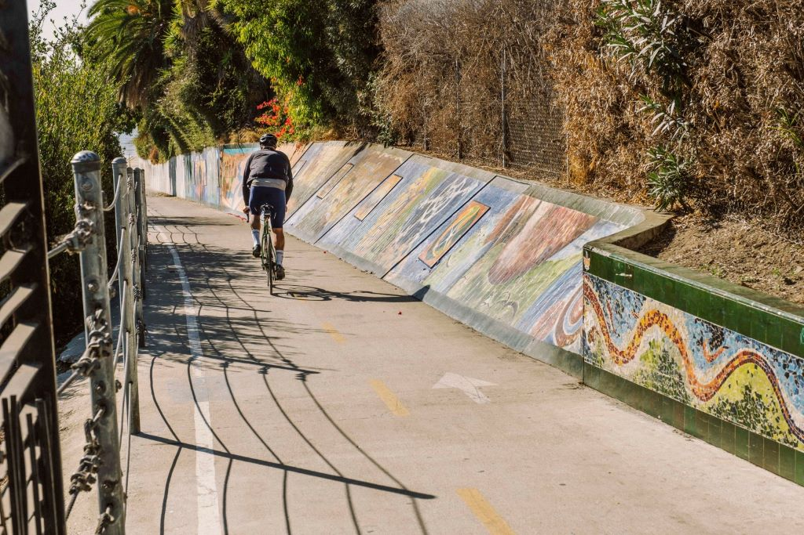

EXPLORE THE OUTDOORS
Biking provides many opportunities to enjoy and explore the outdoors in California. Make small rides and pick one goal, such as climbing a mountain or visiting your favorite market that you want to visit, and then work your way up to that.

Listed below are some favorite California cycling spots:
- Palos Verdes Classic Donut Loop --- Distance: 24.4 miles
- West Oceanfront Trail To The Huntington Beach Bike Trail --- Distance: 12.8 miles
- Ballona Creek Bike Path --- Distance: 13.7 miles
- Chandler Bikeway --- Distance: 5.6 miles
- Santa Ana River West Trail --- Distance: 22.8 miles
- LOng Beach Shoreline Bike Path --- Distance 7.3 miles
- Lake Hollywood Loop --- Distance: 3.5 miles
- Orange Line Bicycle Path --- Distance: 18 miles


By riding bikes, people can pick up food, go for coffee, and shop at local stores, spending money within the neighborhood. The League of American Bicyclists reports that people who ride bikes are more likely to return to their local stores. There are many benefits to traveling by bike in comparison to driving a car. First, bicycles are a lot less expensive to maintain than cars.



Life Style Cycling © Copyright 2022 - Yvette Flores
Site Plan Health Benefits Places to Cycle